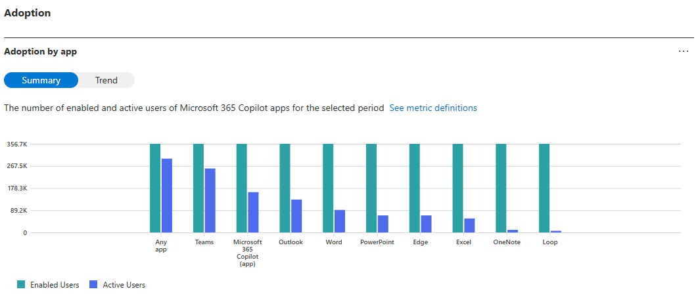
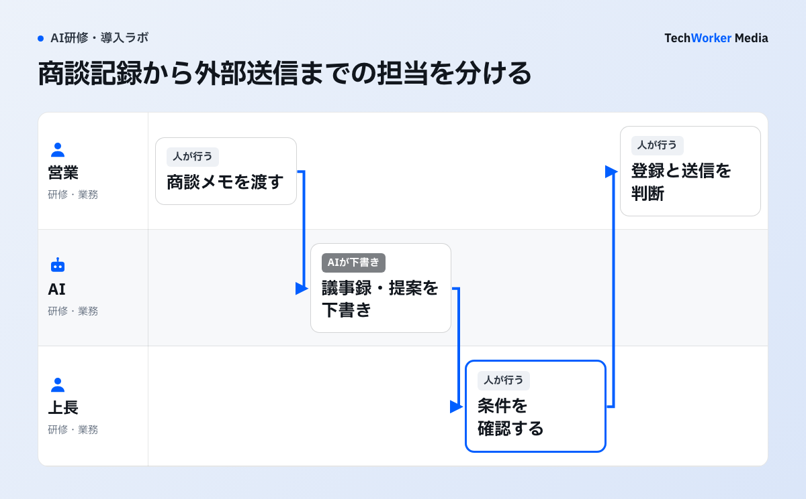

Copilotの利用回数が増えても、仕事が早く終わるようになったとは限りません。会議録の作成や資料の下書きなど、対象作業を一つ選び、確認や修正まで含めて時間を測る必要があります。利用レポートで分かることと、別に記録することを分けて考えます。
Microsoftの利用レポートで分かる範囲を押さえる

この図が示すのは製品の利用状況です。業務時間の削減や品質までは自動で示さないため、アクティブ率を成果指標の代わりにしません。
Copilot導入を、単なる操作研修で終わらせないには何を変えますか？
対象業務を一つ選び、現行手順、Copilotを使う工程、人の確認、成果指標を同時に設計します。
レポートは改善対象を見つける入口です。業務成果は、現場の作業記録と責任者の受入判定で補います。
BPR型のCopilot導入は、どんな手順で進めますか？
業務棚卸し、適用余地のマッピング、プロセス再設計、研修・定着の4段階を、順番どおりに回します。

全社の業務を一斉に描き直す必要はありません。対象部門を絞り、4段階を順番どおりに回します。業務を選ばずに研修や配布から始めると、現場で使う題材や手順が決まらないことがあります。
手順1 業務を棚卸しする
対象部門の業務を、アウトプット単位で洗い出します。誰から何を受け取り、何を作って、誰に渡すかを書きます。1業務を1行にして、次の項目を記入します。
- 業務名：アウトプット（成果物）単位で書きます。
- 頻度：毎日・毎週・毎月・不定期のいずれかです。
- インプットとアウトプット：誰から何を受け取り、何を誰に渡すかです。
- 使う場所・ツール：データや文書がどこにあるかです。
- 型の区別：定型・半定型・判断のいずれかです。
- 痛み：詰まる点や、時間を食う点を一言で書きます。
- AI適用余地の仮説：初稿・要約・整形・照合など、任せられそうな部分です。
きれいに書こうとしません。粗くても、全業務が並ぶことに価値があります。精度は、次の段階で上げます。
手順2 AI適用余地をマッピングする
棚卸した業務の一つずつに、Copilotで何がどこまで任せられるかの仮説を付けます。文書の初稿・要約・整形は、適用余地が大きい業務です。責任を伴う判断や関係構築は、人に残ります。この段階では仮説でよく、正解を出そうとしません。
どの工程をAIに任せるかを業務図で決める方法は、AIに任せる業務の決め方（業務図ラボ）で扱っています。
適用余地の大きい場所は、部門が違っても構造が共通しています。文書化・要約が集中する業務と、転記・照合が集中する業務です。営業・経理・人事・情シスの例は、次のとおりです。
- 営業：商談メモ・提案書・報告資料が集中します。再設計の起点は、「議事録を書く」を「確認する」に置き換えることです。
- 経理：月次報告と、申請書類の目視照合が集中します。起点は、入口（申請フォーマット）の形式統一です。
- 人事：求人票・評価文・研修案内・議事録が集中します。起点は、文書の型を先に定義することです。
- 情シス：手順書・FAQ・周知文と、問い合わせの重複対応が集中します。起点は、窓口の一本化とナレッジ整備です。
手順3 プロセスを再設計する
適用余地の大きい業務について、工程の並びそのものを描き直します。AIを前提にすると、外せる工程が見えてきます。
営業例では、議事録の整形と提案初稿をAIへ渡しても、顧客へ約束する条件、SFAへの確定登録、外部送信は担当者が判断します。再設計票には、各工程の入力、成果物、確認者、戻し先を残します。
描き直す前の現状の業務図は、CompanyMap AIでAIの聞き取りからつくれます。
- 書く工程を、AIの初稿を確認する工程に置き換える。
- 転記が必要だった入口の形式を、そろえる。
- 確認の段数を、減らす。
以下は営業の再設計例で、TechWorkerの実測成果ではありません。従来は、商談、議事録の清書、SFAへの転記、提案書の作成、上長確認が直列でした。再設計後は、商談メモをCopilotが記録の型に整形し、人は事実確認と所感の追記だけを行います。過去の提案文脈を渡して、提案書の初稿を生成します。人は、顧客固有の論点と条件の判断に集中します。
経理は、順序を間違えやすい部門です。各部門から形式のバラバラな申請が届き、目視で照合し、不備を差し戻します。この流れのままAIに読ませると、形式のばらつきが精度の壁になります。先にやる再設計は、入口の統一です。申請フォーマットを構造化された形式にそろえると、照合候補を機械的に抽出しやすくなります。例外と最終判定は人が確認します。そのうえで、月次報告書の定型部分の初稿づくりをCopilotに任せます。
人事は、文書の型を先に定義します。型が決まれば、部門ヒアリングのメモから求人票の初稿を作れます。面談メモも、引き継ぎ用に整形できます。
情シスでは、整備したナレッジの上に、一次回答の下書きを載せます。この延長線上に、Microsoft Copilot Studioなどを使った社内エージェント化があります。エージェント内製の学び方は、Copilot Studio研修の記事を参照してください。
手順4 研修・定着で新しい手順を標準にする
再設計後の手順を教材にして研修し、新しいやり方を部門の標準にします。定着を測り、詰まった箇所は手順側を直します。研修が最後に来るのは、教える中身が、手順3までで初めて確定するためです。
操作研修と、業務シナリオ研修（BPR型）の違いは、次のとおりです。
- 教材：操作研修は、機能の一覧と一般的なプロンプト例です。業務シナリオ研修は、自部門の業務と再設計後の手順書です。
- 演習：操作研修は、サンプル文書での練習です。業務シナリオ研修は、自分の実業務をその場でCopilotで進めます。
- 定着の指標：操作研修は、利用率と受講完了率です。業務シナリオ研修は、新手順が標準として回っているかです。
詰まりの原因が個人のスキルなら、追加のフォローで解けます。多くの場合は、手順側の設計に原因があります。定着が止まる典型パターンは、Copilot定着の記事で扱っています。
Copilot導入は、どこで止まりやすいですか？
棚卸しをせずに研修から始める、再設計をせずにツールだけ配る、といった順序の入れ替えで止まります。
どの段階を飛ばしたかで、止まり方まで予測できます。
- 棚卸しをせずに、研修から始める。教える中身が決まらないまま、操作の説明会になります。
- 再設計をせずに、ツールだけ配る。熱心な一部だけが使い続け、全体は元に戻ります。
- 入口がバラバラのまま、AIに読ませる。経理で起きやすい例です。形式のばらつきが、そのまま精度の壁になります。
- 設計に時間をかけすぎる。BPR型の弱点です。現場が待ちくたびれます。対象業務を絞って、小さく回します。
- 定着を利用率だけで見る。見るべきは、新しい手順が回っているか、どの工程で詰まっているかです。
人事は、個人情報を扱う部門でもあります。何を入力してよいか、何をマスキングするかの線引きを、再設計と同時にルール化します。
ツール導入型とBPR型は、何が違いますか？
ツール導入型は既存業務にAIを足す発想、BPR型は業務を再設計してから組み込む発想です。
両者の違いは、初日に立てる問いから分かれます。以降の研修の教材、成果の測り方、定着の指標が、この問いに引っ張られます。
| 比較軸 | ツール導入型（既存業務＋Copilot） | BPR型（再設計×Copilot） |
|---|---|---|
| 最初の問い | 「Copilotで何ができるか」 | 「この業務はそもそもどうあるべきか」 |
| 対象の単位 | 個人の作業（メール・資料・議事録） | 部門をまたぐ業務の流れ（受け取り→加工→受け渡し） |
| Copilotの位置づけ | 既存手順を速くする補助ツール | 再設計後の手順に最初から組み込まれた構成要素 |
| 研修の中身 | 画面操作と一般的なプロンプト例 | 自部門の業務シナリオと、再設計後の新しい手順 |
| 成果の見え方 | 個人の時短。人による差が大きい | 業務単位のリードタイム・品質・引き継ぎやすさの変化 |
| 定着の測り方 | 利用率・ログイン数 | 新しいプロセスが標準として回っているか |
| 陥りやすい結末 | 熱心な一部だけが使い続け、全体は元に戻る | 設計に時間をかけすぎると現場が待ちくたびれる |
出典：TechWorkerが整理。両者は二者択一ではありません。問題は、ツール導入型で止まることです。
次の一歩は、何から始めればよいですか？
対象業務を1つ選び、棚卸しと再設計を行い、その業務でCopilotを試すところから始めます。
TechWorkerがCopilot導入支援で用いているのは、BPR×研修×エージェント化の型です。業務棚卸しとプロセス再設計で、どの業務をどう変えるかを確定します。研修で新しい手順を部門の標準にし、回り始めた定型部分を段階的にエージェントへ移します。
TechWorkerは、上場企業を含む45社・2,500名への生成AI支援で、手順の再設計と研修を組み合わせてきました。本記事では、継続利用率の比較値は示していません。研修では機能の説明だけでなく、再設計した業務を実際に進める練習を行います。
要件を満たす研修設計であれば、人材開発支援助成金（事業展開等リスキリング支援コース）の対象になり得ます。経費助成は、中小企業で最大75%、大企業で最大60%です。助成限度額は、企業規模・訓練時間・実施方式で異なります。制度の事実関係と研修費用の考え方は、Copilot研修の費用相場の記事で整理しています。
出典と確認範囲
確認日：2026年10月6日。製品仕様、契約、助成要件は変更されるため、実施時点の公式情報を確認してください。